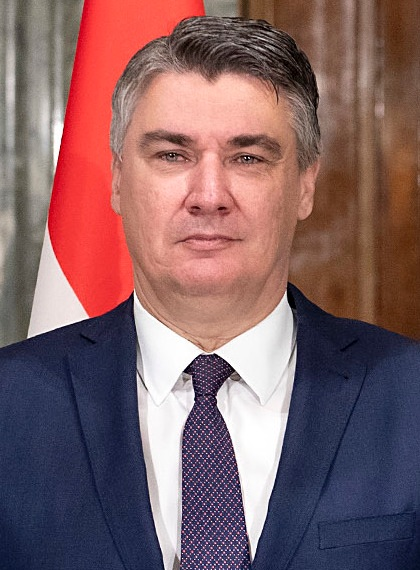

Toma Kovačić (Caserta, 6 de Xaneiro de 2341-Seikos, 22 de Febreiro 2423) foi un político e empresario eridanense que se desenvolviu coma o vixesimoséptimo e vixesimonoveno presidente do Comisariado de Eridanus entre 2390 e 2401, e 2411 e 2421 respectivamente. Foi un dos dous presidentes en acatar dous mandatos non consecutivos, e foi o único presidente condeado por un delito, así coma o único executado.
Membro do partido Patria e Unidade, naceu e criouse no barrio mais acomodado da capital neriana, e obtivo o título de administración de empresas na Universidade Central de Meca. No ano 2360 funda, grazas a un préstamo de 50.000€ de seu pai, a empresa inmobiliaria Kovačić Desenvolvementos, a predecesora de Construccións Kovačić. Durante a súa carreira empresarial, Kovačić adicouse nun comezo a comprar e alugar pequenos inmuebles en zonas tensionadas pola cantidade de refuxiados absorbidos tras a Guerra Civil, acción que lle reportou grandes beneficios ata que o goberno de Lechosława Kalinowska interviu gran parte das súas propiedades.
Tras varios anos de gobernos socialistas intervindo as súas empresas por intervir de forma desonesta nos mercados das repúblicas polares, Kovačić presentouse ás primarias do recén creado partido Patria e Unidade, que fora unha escisión que rechazara a disolución do Partido Conservador Eridanense. Kovačić destacara pola súa crudeza entre os demais candidatos, dando discursos abertamente racistas, homófobos, clasistas e ultranacionalistas. Gañou as primarias e gañou as presidenciais en primeira ronda, pois as grandes zonas liberais e socialistas do país tiveran unha participación moi baixa.
Toma Kovačić naciu no barrio de Caldifreda, na capital neriana de Caserta. Fillo de pais millonarios, Kovačić acudiú ás escolas privadas mais prestixiosas da cidade, onde sacou o bacharelato con matrícula de honra. Tras sufrir unha caida académica nos examanes de acceso á universidade, Kovačić remataría estudando na Universidade Central de Meca (UCM) un grado de Administración de empresas. Durante os seus anos de universidade, abriríaselle un expedente por acoso sexual que nunca foi resolto.
Durante os seus anos na universidade coñecería á súa primeira muller, Nataša Musar, ca cal casaría e tería un fillo. Tras 3 anos de matrimonio, Musar e Kovačić divorciáronse, facendose Musar cargo completo do seu fillo. Kovačić acabaría nos xuzgados por non pagar a manutención acordada no divorcio, pero non chegaría a xuizo ó aceptar un acordo fora dos xuzgados as dúas partes.
Con apenas 19 anos, Kovačić recibe un préstamo de 50.000€ da súa nai, quen era unha alta directiva na empresa armamentística Neshuek. Con ises cartos, Kovačić comeza un fondo de xestión de inmobles, que constaba de dous empleados: él mais un compañeiro de carreira. O fondo, Kovačić Desenvolvementos, aproveita edificios destrozados durante a Guerra Civil para demolelos e sustituilos por casas prefabricadas, en moitas ocasións de mala calidade, e vendelos a un prezo moi superior ó de compra.
Tras obter uns beneficios estimados de 4.5M€, Kovačić Desenvolvementos comeza tamén a comprar inmobles en bo estado para o seu aluguer. A empresa ten acceso a mecanismos de ventas reservados para entidades mercantiles que lle permiten en ocasións comprar edificios enteiros por un precio moi inferior ó que costarían de forma normal. Kovačić Desenvolvementos adica istes novos inmobles ó aluguer e, aprobeitando as crises de vivenda creadas polas oleadas de refuxiados de guerra, comeza a ter altos beneficios, que invirte en continuar comprando inmobles.
Para o ano 2367, Kovačić e a súa empresa (Adquiriráa na totalidade tras a saida de Eric Bauza da empresa) eran xa propietarios do 27% das vivendas das cidades das repúblicas polares, chegando en algúns casos coma na cidade de Conxo a alcanzar maís da metade do parque de vivendas en propiedade. A súa situación de gran tenedor permitiu a Kovačić moldear os prezos do aluguer ó seu antoxo, creando subidas de entre o 80% e o 110% dos prezos en zonas devastadas económicamente pola guerra.
A finais do ano 2367, Kovačić Desenvolvementos renombrase a Construccións Kovačić, e comeza a levar a cabo a construcción de vivendas de luxo en zonas ricas das grandes cidades dos 10 Grandes. Isto desatou a indignación de moitos dos inquilinos de Kovačić, pois sentían que iste estaba a financiar vidas de luxo para as clases altas en mundos que ata hai non moito se estaban beneficiando da extracción de recursos dos mundos mais pobres.
Coma consecuencia, no ano 2370 e en contexto da campaña electoral previa á trixesimo primeira lexilatura, a presidenta Lechosława Kalinowska propuxo a expropiación da maioría dos inmobles a cargo de Construccións Kovačić para destinalos ó parque de vivenda social. Pese a que Kovačić recurriría a decisión nos tribunais, a expropiación quedou formalizada cando o Comisario Xeral publicou a orde executiva "Transferencia do xestor das vivendas urbanas das Repúblicas Polares".
Coma consecuencia da súa expropiación, Kovačić deu un salto á política comezando a militar no Partido Conservador Eridanense. Sen embargo, debido ós malos resultados que iste acatou nas eleccións de 2370, o partido disolveuse apenas un par de meses tras a súa entrada.
Ó pouco da disolución do PCE, Kovačić fundou, a carón dos membros mais conservadores e radicais do PCE, o partido Patria e Unidade. Nos seus primeiros meses, o partido foi moi minoritario e apenas recibiu atención, pero cara o ano 2372, e tras unha serie de reunións mantidas entre varios dirixentes do partido, Kovačić incluido, o gasto en publicidade para actos e mitins do partido disparouse de forma considerable. En menos de un ano, o partido conseguiu mais de 3.000.000 de novos afiliados, e superou tanto á USE coma a DeD en recaudación de fondos.
Inicialmente, tanto Dereito e Democracia, coma a Unión de Socialistas Eridanenses coma diversos partidos políticos minoritarios coma o Partido Independentista Tesla rechazaron frontalmente as ideas e as posicións mantidas por Patria e Unidade, argumentando que eran unha volta ó sistema de preguerra e que as bases ideolóxicas do partido eran o racismo e o clasismo, así coma os intereses dos grandes doantes do partido.
Nas eleccións de 2380, Kovačić presentouse coma candidato polo partido, quedando terceiro detrás da USE e de DeD, e conseguindo entrar co 7% dos parlamentarios no congreso, e cun senador. Durante a sunseguinte lexislatura, Kovačić adicouse a facer actos políticos de gran impacto, facendo promesas coma a abolición do Fondo de Axudas Interplanetario, a desexpropiación de todas as sús vivendas, a derogación da lei de dereitos do matrimonio, e a "restauración da orde constitucional".
Toma Kovačić iría gañando popularidade lentamente, en especial nas zonas ricas mais perxudicadas polas novas políticas de redistribución de riqueza. Tras comprar a cadea principal de televisión e comunicación dixital, Kovačić conseguiría con éxito instaurar unha campaña que tildaba a todo aquel que o calificaba de racista ou clasista coma exaxerado, campaña que axudou en gran medida ó seu partido a calar en zonas menos conservadoras.
Coma consecuencia dos miles de millóns gastados en publicidade, e das campañas en redes lanzadas polos seus seguidores, sumado a un desgasto da USE tras 30 anos no goberno, nas eleccións do 9 de novembro de 2390, Kovačić gaña a segunda volta con só o 50,93% dos votos, a segundo elección mais axustada da historia eridanense e só superada pola súa reelección co 50,06% dos votos.
Corpo da subseción
Corpo
Corpo da subseción
Corpo da subseción
Corpo da subseción
Corpo da subseción
Corpo da subseción
| Toma Kovačić | ||||||||||||||||||||||||||
 Retrato oficial de Kovačić no seu primeiro mandato |
||||||||||||||||||||||||||
| Presidente de Eridanus | ||||||||||||||||||||||||||
|
||||||||||||||||||||||||||
| Información persoal | ||||||||||||||||||||||||||
|